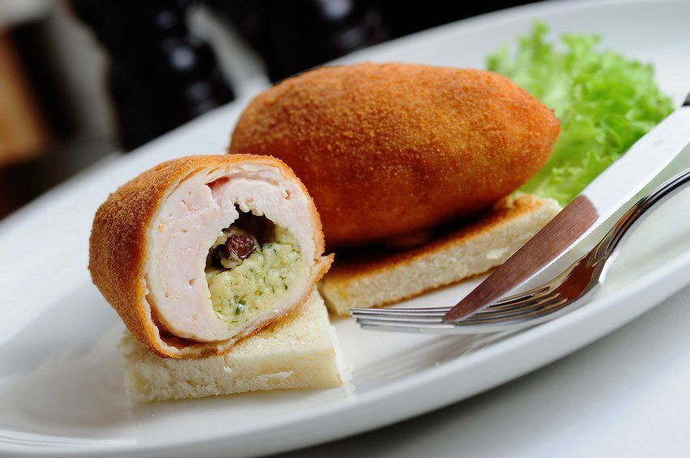

Борщ з пампушками — традиційна українська страва на основі буряка, капусти, картоплі та м'яса, яка подається гарячою зі сметаною. До борщу часто подають пампушки — м'які булочки з часниковою заправкою, що надають особливого аромату й смаку.
Голубці
Складність
Голубці — це традиційна українська страва, що складається з м'ясного або овочевого начинки, загорнутої у варені капустяні листки. Начинка часто містить м'ясний фарш (свинину, яловичину або курку), рис, цибулю та спеції. Голубці готуються шляхом тушкування у томатному соусі або з овочевим бульйоном до повної готовності. Це ситна і смачна страва, яка є популярною в багатьох країнах Східної Європи.
Холодець
Складність
Холодець — це традиційна холодна закуска, що готується з м'яса, яке вариться до стану желе. Основні інгредієнти включають свинячі або яловичі м'ясні частини (наприклад, свинячі ніжки, вуха або окіст), які довго варять з овочами і спеціями. Після варіння бульйон охолоджується, що дозволяє йому загуснути до консистенції желе. Холодець часто подається з гірчицею, хріном або часниковим соусом і є популярною стравою на святкових столах в Україні та інших країнах Східної Європи.

Котлета по-київськи
Складність
Котлета по-київськи — це популярна українська страва, що складається з курячого філе, начиненого вершковим маслом з зеленню та спеціями. Куряче філе обвалюється у панірувальних сухарях і смажиться до золотистої скоринки. Після приготування котлета має ніжний, соковитий внутрішній начинковий шар, який створює неповторний смаковий ефект. Це класичний варіант святкової або ресторанної кухні.
Капусняк
Складність
Капусняк — це традиційний український суп на основі квашеної капусти. Готується з м'ясного бульйону (свинячого, яловичого або курячого), до якого додається квашена капуста, картопля, морква, цибуля, і часто м'ясо або ковбаса. Суп має характерний кислуватий смак завдяки квашеній капусті і часто подається зі сметаною і свіжою зеленню. Капусняк є популярною стравою у зимовий період і відомий своєю ситністю та насиченістю.
Банош
Складність
Банош -в'язка кукурудзяна каша, зварена на вершках або сметані, заправлена шкварками, грибами та бринзою тощо. Страва української національної кухні, поширена в карпатському регіоні, зокрема, належить до гуцульської кухні.
Деруни
Складність
Деруни-картопляні млинці, мають велику популярність в українській, польській, білоруській, чеській, словацькій, болгарській, австрійській та німецькій кухнях, в Україні особливо поширені в північних і західних районах.
Куліш
Складність
Куліш традиційна народна українська страва з пшона, зварена на м’ясній юшці або воді, яку затирають салом із цибулею і часником. Куліш за способом приготування схожий на крупник, але готується переважно з пшона. Його легко готувати в домашніх та польових умовах.
Шпундра
Складність
Шпундра давня українська народна страва. Для приготування цієї страви зазвичай використовується смажена свинина (підчеревина чи грудина), тушкована із буряками в буряковому квасі. Шпундра дуже нагадує верещаку, але, на відміну від неї, шпундру заправляли не сухарями, а борошном або запареним тертим пшоном